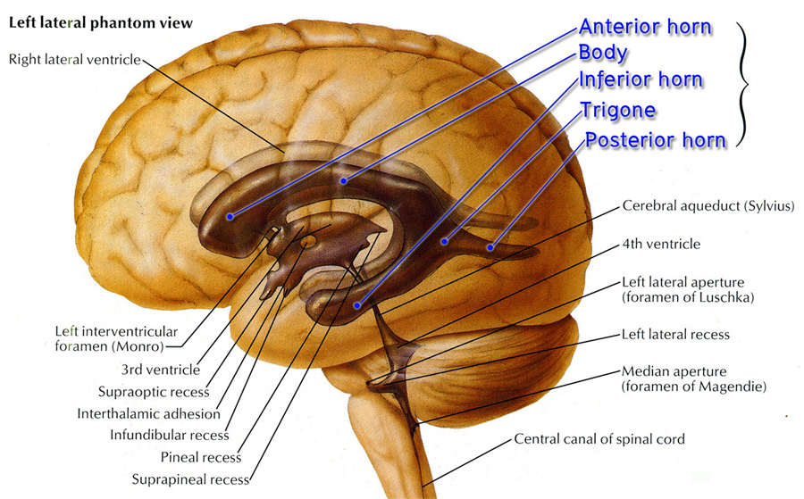
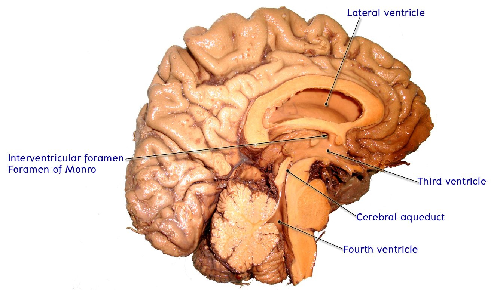
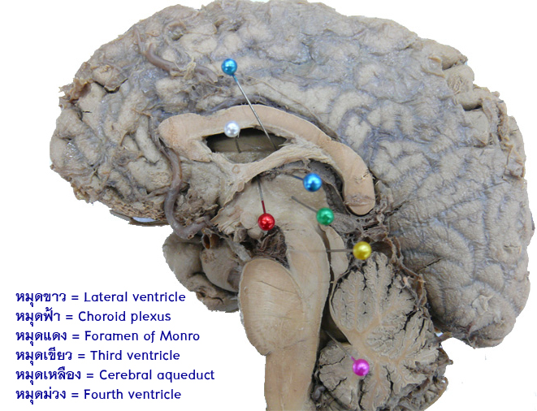
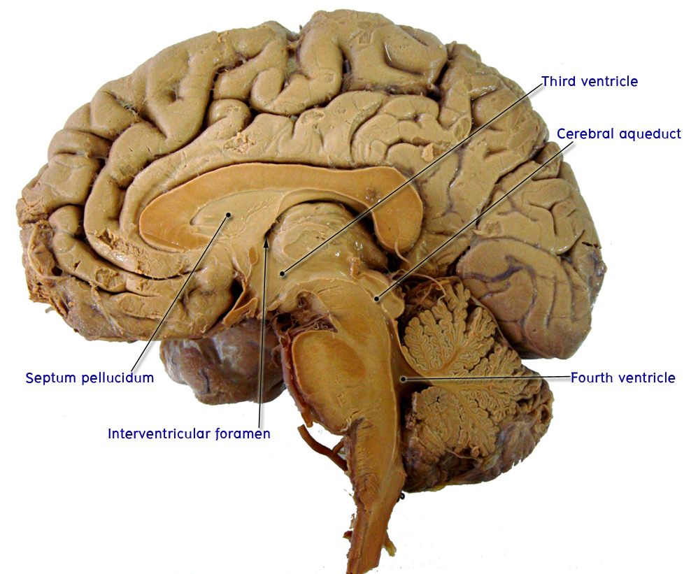
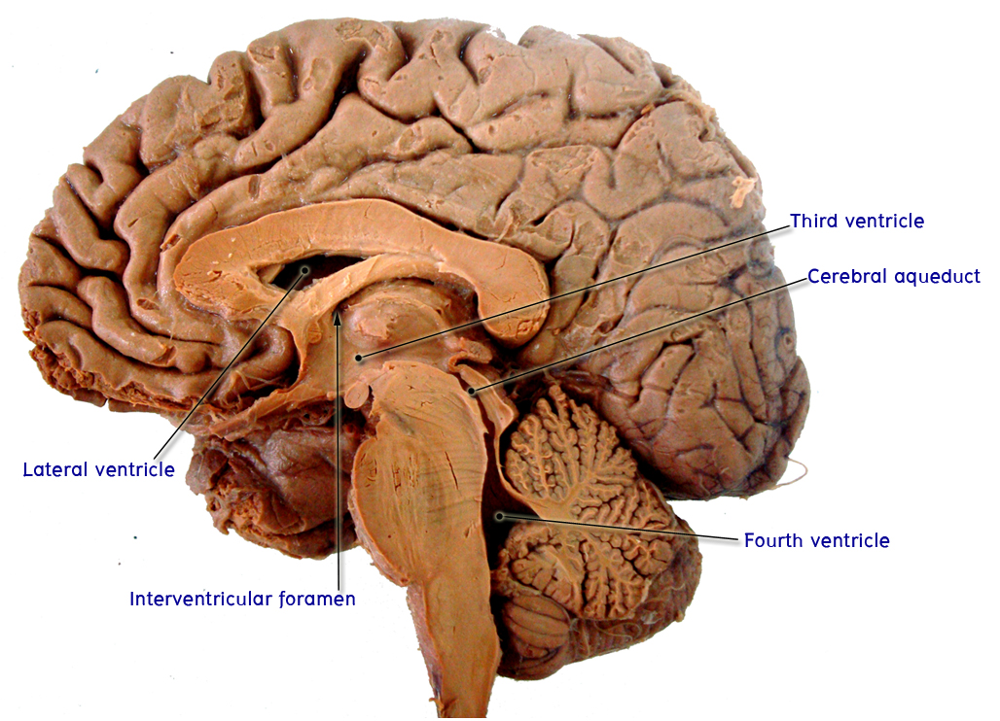

Ventricular system
ให้นักศึกษาชี้แสดงส่วนต่างๆ ของ ventricular systemจากสมองผ่าซีกและหุ่นจำลองดังต่อไปนี้
- ชี้แสดงLateral ventricles จะเห็นว่าเป็นโพรงที่แทรกอยู่ใน cerebral hemisphere แต่ละข้างบรรจุด้วยน้ำหล่อเลี้ยงสมองและไขสันหลัง (cerebrospinal fluid)

ศึกษาตำแหน่งของ lateral ventricle ส่วนต่างๆ รวมทั้ง structures ของสมองที่สัมพันธ์กัน ได้แก่
- Anterior or frontal horn รวมทั้งโครงสร้างที่เป็นขอบเขต ได้แก่ head of caudate nucleus, corpus callosum และ septum pellucidum
- Body รวมทั้งโครงสร้างที่เป็นขอบเขต ได้แก่ body of caudate nucleus, corpus callosum, fornix และ thalamus
- Trigone
- Posterior หรือ occipital horn
- Inferior หรือ temporal horn ให้สังเกตว่าจะมี medial wall คือ hippocampal formation และมี roof เป็น tail of caudate nucleus

- ชี้แสดง interventricular foramen (foramen of Monro) ซึ่งอยู่ถัดมาทางด้านหลังต่อ column of fornix เป็นช่องทางติดต่อระหว่าง lateral ventricle และ third ventricle
- ชี้แสดง third ventricle ซึ่งเป็นซอกแคบๆ ที่อยู่ใน median plane ของ diencephalon มีผนังทางด้านข้างทั้งสองข้างเป็น thalamus และ hypothalamus
- ชี้แสดง cerebral aqueduct of Sylvius เป็นช่องทางที่ติดต่อระหว่าง third ventricle และ fourth ventricle มีความสำคัญทางคลินิกมาก เพราะมันเป็นท่อที่แคบที่สุดของ ventricular system จึงมักเกิดการอุดตัดและเป็นผลให้เกิด obstructive hydrocephalus
- ชี้แสดงfourth ventricle เป็นช่องแทรกอยู่ระหว่าง cerebellar peduncles, pons และ cerebellum และติดต่อกับ cisterna magnum ทาง lateral apertures (foramina of Luschka) ซึ่งอยู่ทางด้านข้างและ foramen of Magendie ซึ่งอยู่ในแนว midline


